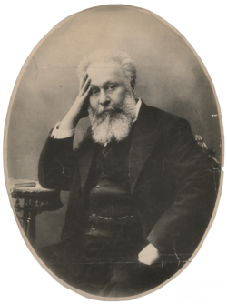
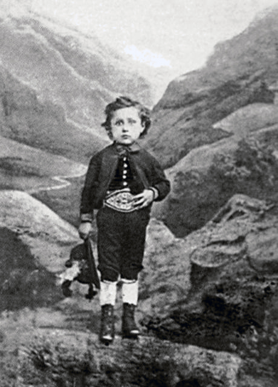

აკაკი ბავშვობაში.
აკაკი წერეთელი დაიბადა 1840 წლის 9 (21) ივნისს ზემო იმერეთის შეძლებული თავადის როსტომ წერეთლის ოჯახში. დედის
მხრიდან აკაკი წერეთელი იყო იმერეთის მეფის პირდაპირი შთამომავალი. იმერეთის მეფე სოლომონ I-ის შვილიშვილის შვილი
იყო აკაკის დედა - ეკატერინე აბაშიძე. ეკატერინეს ბაბუა ქაიხოსრო აბაშიძე იყო 1810 წლის იმერეთის აჯანყების ერთ-ერთი
ლიდერი, ხოლო ეკატერინეს მამა ივანე აბაშიძე იყო 1819-1820 წლების იმერეთის აჯანყების ერთ-ერთი ლიდერი. ამ
აჯანყებების გამო ეკატერინეს ოჯახს რუსეთის იმპერიის ხელისუფლება დევნიდა. 12 წლიდან ეკატერინე მამია V გურიელის
კარზე იზრდებოდა, 20 წლისა კი როსტომ წერეთელს მიათხოვეს.
აკაკი წერეთელი დაიბადა 1840 წლის 9 ივნისს, სოფელ სხვიტორში. ამ დროს ჯერ კიდევ შემორჩენილი იყო ბავშვის გაძიძების
ძველი ქართული ტრადიცია. აკაკი სოფელ სავანეში, გლეხების, ფარსადან ყანჩაველის და მანო სადუნიშვილის ოჯახში
გაგზავნეს აღსაზრდელად. მოგვიანებით ავტობიოგრაფიულ ნაწარმოებში „ჩემი თავგადასავალი“, აკაკი დიდი პატივისცემით
იხსენიებს ძიძობის ინსტიტუტს

განათლება
1852 წელს აკაკი შინ დააბრუნეს სკოლაში სწავლის დასაწყებად. ის ქუთაისის კლასიკურ გიმნაზიაში მიაბარეს. სკოლაში
გავრცელებული ხელისგულზე სახაზავით ცემის პრაქტიკის გამო, აკაკის არ უვარგოდა კალიგრაფია. მასწავლებლების, ფრანგი
ტურესის და პოლონელი როდზიევიჩის საუბრის მოსმენამ აკაკის გადააწყვეტინა სწავლის გაგრძელება სანქტ-პეტერბურგში
სამხედრო სასწავლებელში. 1859 წელს მან შეწყვიტა სწავლა ქუთაისის გიმნაზიაში და ოთხი თვე ემზადებოდა როდზიევიჩთან.
იმავე წელს გაემგზავრა სანქტ-პეტერბურგში, სადაც უკვე ცხოვრობდა მისი ძმა იასონი. იასონი მსახურობდა კონვოიში. აკაკი
თვალს ადევნებდა ქართველების კონვოის ქართველი მოსამსახურეების ცხოვრებას სანქტ-პეტერბურგსა და ცარსკოე სელოში და
გადაიფიქრა სამხედრო განათლების მიღება. სანაცვლოდ, გადაწყვიტა, ჩაებარებინა უნივერსიტეტში. ამასვე ურჩევდნენ
სანქტ-პეტერბურგელი ქართველი სტუდენტები, რომელთა შორისაც ბევრი ქუთაისელიც იყო. 1859 წელს აკაკი გახდა
სანქტ-პეტერბურგის სახელმწიფო უნივერსიტეტის აღმოსავლეთმცოდნეობის ფაკულტეტის სტუდენტი. სტუდენტების ნაწილთან აკაკის
არ ჰქონდა კარგი ურთიერთობა. მას ჯაშუშობაც კი დააბრალეს. ამ ვითარების და მატერიალური გაჭირვების გამო აკაკიმ
უნივერსიტეტის ნაადრევად დასრულება გადაწყვიტა. მან 1862 წლის მარტში ჩააბარა უკანასკნელი გამოცდა და წარადგინა
საკანდიდატო ნაშრომი, რომელიც კომისიამ მოიწონა. მაგრამ აკაკიმ დიპლომი ვერ მიიღო, რადგან არც გიმნაზიის დიპლომი
ჰქონდა მიღებული, მისი მიტოვების გამო.

ოჯახი
აკაკი წერეთელი დაოჯახებას არ აპირებდა, მაგრამ 1864 წელს მოსკოვში ყოფნის დროს მოულოდნელად და დაუფიქრებლად ცოლად
მოიყვანა ნატალია ბაზილევსკაია. მასთან ჰყავდა შვილი ალექსი. აკაკის ოჯახი იშვიათად ჩადიოდა საქართველოში, შვილს
ქართული ენაც არ უსწავლია, ის საბალეტო თეატრის ანტერპრენორი გახდა და ბევრს მოგზაურობდა. მეუღლე აკაკის ხშირად
სთხოვდა ფულს და აკაკიც ვალებს იღებდა და უგზავნიდა მას ფულს სხვადასხვა ქალაქებში. 1909 წელს პარიზში სამკურნალოდ
მყოფ აკაკის ოჯახის წევრები არ დაეხმარნენ.